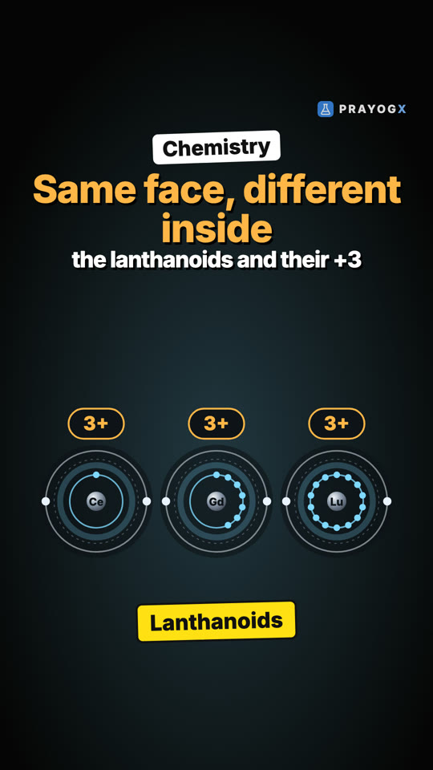
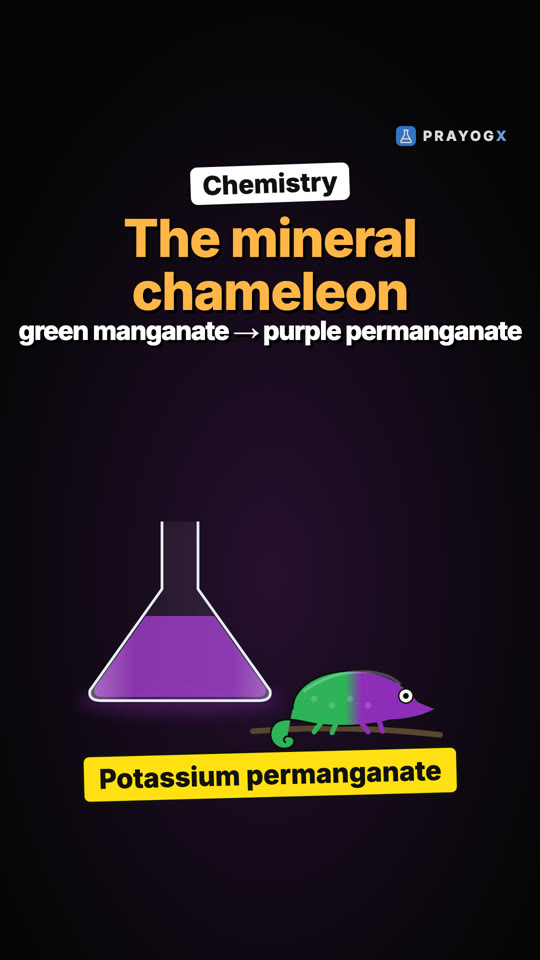

Choose your class
Every subject is laid out chapter by chapter. Each topic has a short Doodle video, notes you can download and a quick quiz.
Class 9Motion, matter, the cell and number systems: the foundations of school science and maths.ScienceMathematics21 videosClass 10Light, electricity, chemical reactions, life processes and the algebra and geometry of board year.ScienceMathematics9 videosClass 11Mechanics, thermodynamics, atomic structure, bonding, functions and the living world.PhysicsChemistryMathematicsBiology16 videosClass 12Electromagnetism, optics, modern physics, solutions and kinetics, calculus and genetics.PhysicsChemistryMathematicsBiology50 videosExtra / SupplementaryCurious questions beyond the syllabus: why the sky is blue, why we yawn, why 0.999… equals 1, and more.ScienceBiologyMathematics11 videos
Newest videos
 The Spark Is Burning Metal: Lanthanoids in Everyday TechnologyA lighter "flint" is not stone but mischmetall, about 95% lanthanoid metals (mostly cerium) and 5% iron; scraped shavings catch fire in air, so the spark is burning metal. Lanthanoids are silvery-white, soft metals that tarnish rapidly in air; hardness increases with atomic number (samarium is steel-hard); they conduct heat and electricity. They are very reactive (early members like calcium, later ones like aluminium; E° about −2.2 to −2.4 V): they burn in O₂ (Ln₂O₃; Ce gives CeO₂) and halogens (LnX₃), react with water (Ln(OH)₃ + H₂) and dilute acids (H₂), and on heating form LnN, Ln₂S₃, LnC₂ (2773 K) and hydrides. Their oxides and hydroxides are basic. Most Ln³⁺ ions are coloured because of f electrons; La³⁺ (4f⁰) and Lu³⁺ (4f¹⁴) are colourless. Uses: alloy steels (best single use), mischmetall in Mg alloys for bullets, shells and lighter flint, mixed oxides as petroleum-cracking catalysts, oxides as TV phosphors, and Nd₂Fe₁₄B magnets in phones. Rare earths are not rare: cerium is as common as copper.The d- and f-Block Elements · Chemistry
The Spark Is Burning Metal: Lanthanoids in Everyday TechnologyA lighter "flint" is not stone but mischmetall, about 95% lanthanoid metals (mostly cerium) and 5% iron; scraped shavings catch fire in air, so the spark is burning metal. Lanthanoids are silvery-white, soft metals that tarnish rapidly in air; hardness increases with atomic number (samarium is steel-hard); they conduct heat and electricity. They are very reactive (early members like calcium, later ones like aluminium; E° about −2.2 to −2.4 V): they burn in O₂ (Ln₂O₃; Ce gives CeO₂) and halogens (LnX₃), react with water (Ln(OH)₃ + H₂) and dilute acids (H₂), and on heating form LnN, Ln₂S₃, LnC₂ (2773 K) and hydrides. Their oxides and hydroxides are basic. Most Ln³⁺ ions are coloured because of f electrons; La³⁺ (4f⁰) and Lu³⁺ (4f¹⁴) are colourless. Uses: alloy steels (best single use), mischmetall in Mg alloys for bullets, shells and lighter flint, mixed oxides as petroleum-cracking catalysts, oxides as TV phosphors, and Nd₂Fe₁₄B magnets in phones. Rare earths are not rare: cerium is as common as copper.The d- and f-Block Elements · Chemistry The Element That Hid for 134 Years: Lanthanoid ContractionHafnium sat in zircon beside zirconium but was found only in 1923, 134 years after zirconium, because the two are almost the same size (Zr 160 pm, Hf 159 pm) despite Hf's 32 extra electrons and extra shell. Between them in period 6 sit the 14 lanthanoids, across which the size of atoms and Ln³⁺ ions decreases steadily (La³⁺ ≈ 103 pm → Lu³⁺ ≈ 86 pm): the lanthanoid contraction. Each step adds a proton while the new electron enters 4f, which shields poorly (s > p > d > f), so the outer electrons are pulled in. The contraction cancels the expected increase in period 6: Zr ≈ Hf, Nb ≈ Ta, Mo ≈ W; Zr and Hf (and the lanthanoids) are hard to separate; and the basicity of Ln(OH)₃ decreases from La to Lu.The d- and f-Block Elements · Chemistry
The Element That Hid for 134 Years: Lanthanoid ContractionHafnium sat in zircon beside zirconium but was found only in 1923, 134 years after zirconium, because the two are almost the same size (Zr 160 pm, Hf 159 pm) despite Hf's 32 extra electrons and extra shell. Between them in period 6 sit the 14 lanthanoids, across which the size of atoms and Ln³⁺ ions decreases steadily (La³⁺ ≈ 103 pm → Lu³⁺ ≈ 86 pm): the lanthanoid contraction. Each step adds a proton while the new electron enters 4f, which shields poorly (s > p > d > f), so the outer electrons are pulled in. The contraction cancels the expected increase in period 6: Zr ≈ Hf, Nb ≈ Ta, Mo ≈ W; Zr and Hf (and the lanthanoids) are hard to separate; and the basicity of Ln(OH)₃ decreases from La to Lu.The d- and f-Block Elements · Chemistry
Same Face, Different Inside: The LanthanoidsThe lanthanoids (lanthanum and the fourteen elements after it) have the general configuration [Xe] 4f¹⁻¹⁴ 5d⁰⁻¹ 6s². Each new electron goes into the deep 4f subshell, shielded by 5s²5p⁶, while the outer 6s² stays the same, so the elements are very alike (the Ytterby minerals took chemists over a century to sort out). Losing 6s² and one more electron gives the characteristic +3 state (La³⁺ 4f⁰ … Lu³⁺ 4f¹⁴). +4 and +2 appear near empty, half-filled or full 4f (Ce⁴⁺ 4f⁰, Tb⁴⁺ 4f⁷, Eu²⁺ 4f⁷, Yb²⁺ 4f¹⁴), but Ce⁴⁺ is a strong oxidant and Eu²⁺ a strong reductant: both return to +3.The d- and f-Block Elements · Chemistry No d Electrons, Still Purple: Why KMnO₄ Is So Intensely ColouredIn MnO₄⁻ manganese is +7 (3d⁰), so no d–d transition is possible. The colour comes from ligand-to-metal charge transfer: visible light moves an electron from an oxygen into the empty d orbitals of Mn. This absorbs green-yellow light (≈ 525 nm), so the solution looks purple. Charge transfer is an allowed transition, so it absorbs far more light than restricted d–d transitions: KMnO₄ is intensely coloured while Ti³⁺(aq) or Mn²⁺(aq) are pale. Chromate (yellow) and dichromate (orange), also d⁰, are coloured the same way.The d- and f-Block Elements · Chemistry
No d Electrons, Still Purple: Why KMnO₄ Is So Intensely ColouredIn MnO₄⁻ manganese is +7 (3d⁰), so no d–d transition is possible. The colour comes from ligand-to-metal charge transfer: visible light moves an electron from an oxygen into the empty d orbitals of Mn. This absorbs green-yellow light (≈ 525 nm), so the solution looks purple. Charge transfer is an allowed transition, so it absorbs far more light than restricted d–d transitions: KMnO₄ is intensely coloured while Ti³⁺(aq) or Mn²⁺(aq) are pale. Chromate (yellow) and dichromate (orange), also d⁰, are coloured the same way.The d- and f-Block Elements · Chemistry
The Mineral Chameleon: Potassium PermanganatePotassium permanganate is made by fusing pyrolusite (MnO₂) with KOH and an oxidiser to give dark green potassium manganate (Mn +6). In neutral or acidic water manganate disproportionates (3MnO₄²⁻ + 4H⁺ → 2MnO₄⁻ + MnO₂ + 2H₂O), the 'mineral chameleon' Glauber saw; commercially it is oxidised at an anode. In acid MnO₄⁻ takes 5 electrons to give almost colourless Mn²⁺ (so it is its own indicator in titrations); in neutral or faintly alkaline solution it takes 3 electrons and gives brown MnO₂.The d- and f-Block Elements · Chemistry The Orange That Turns Green: Potassium DichromatePotassium dichromate is made from chromite ore: fusion with sodium carbonate in air gives yellow sodium chromate (Fe₂O₃ is filtered off), acid turns it into orange sodium dichromate (two CrO₄ tetrahedra share one oxygen), and KCl precipitates the less soluble K₂Cr₂O₇. Chromate and dichromate interconvert with pH while Cr stays +6. In acid, Cr₂O₇²⁻ + 14H⁺ + 6e⁻ → 2Cr³⁺ + 7H₂O (E° = 1.33 V): a strong oxidising agent that turns orange to green, oxidising Fe²⁺, I⁻, H₂S and, in the 1954 breathalyser, ethanol.The d- and f-Block Elements · Chemistry
The Orange That Turns Green: Potassium DichromatePotassium dichromate is made from chromite ore: fusion with sodium carbonate in air gives yellow sodium chromate (Fe₂O₃ is filtered off), acid turns it into orange sodium dichromate (two CrO₄ tetrahedra share one oxygen), and KCl precipitates the less soluble K₂Cr₂O₇. Chromate and dichromate interconvert with pH while Cr stays +6. In acid, Cr₂O₇²⁻ + 14H⁺ + 6e⁻ → 2Cr³⁺ + 7H₂O (E° = 1.33 V): a strong oxidising agent that turns orange to green, oxidising Fe²⁺, I⁻, H₂S and, in the 1954 breathalyser, ethanol.The d- and f-Block Elements · Chemistry